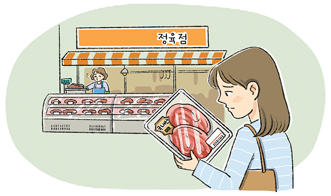

생각보편 직업윤리
한 재래시장의 정육점에서 외국산 돼지고기를 국내산이라고 속여 판매하다가 적발됐다. 해당 고기에는 국내산 딱지가 붙어 있었지만 농산물 단속반이 돼지고기 원산지 판별 검정 도구로 검사해 보니 외국산인 것이 탄로 났다. 정육점 주인은 원산지를 속여 판 까닭에 대해 “단가 때문이다.”라고 답했다. 농산물 단속반은 또 다른 정육점에서 원산지 판별 검사를 실시하였고, 검사 결과 해당 정육점 역시 외국산 돼지 고기의 원산지를 국내산이라고 속여 판매하고 있었다.
- JTBC, 「JTBC 뉴스룸」, 2023. 1. 13.
김 씨는 사용하는 데 편리하고 성분이 좋은 화장품이 새로 나왔다는 친구의 말을 듣고 화장품 가게를 찾아갔다. 김 씨가 직원에게 해당 화장품에 대해 묻자 직원은 해당 화장품의 사용 방법이 생각만큼 쉽지 않다고 말했다. 특히 김 씨와 같이 아침에 출근하느라 바쁜 직장인에게는 더욱 해당 화장품을 추천하지 않는다고 답했다. 고객을 진심으로 대하는 직원의 태도를 보고 김 씨는 가게에 진열된 다른 화장품을 여러개 더 구매했다.
- 이관춘, 『직업윤리 : 경쟁의 새로운 패러다임』.
●
사례 1과 사례 2의 정육점 주인과 화장품 판매원의 행동에는 어떤 차이점이 있는지 이야기해 보자.
사례 2의 화장품 가게 직원의 행동은 정직했지만, 사례 1의 정육점 직원은 다른 사람을 속였으므로 정직하지 않았다.
●
사례 1과 사례 2를 읽고 모든 직업에 공통으로 필요한 윤리 덕목이 무엇인지 생각해 보고, 직업윤리가 필요한 까닭을 이야기해 보자.
모든 직업에 공통적으로 필요한 덕목은 정직인 것 같다. 우리는 직업 생활을 하며 다른 사람과 영향을 주고받기 때문에 직업윤리가 필요하다.